We require a nominal DB to perform RVE model in material suite, for this lab we will use Forging_2D_Nominal.key from \2D\LABS\RVE_LABS folder to generate nominal DB. Open NG Pre (
1.1. Introduction to RVE model
1.2. Launch RVE model in material suite
1.3. Object selection and point selection
1.4.1. Defining RVE Model dimension
1.4.2. Defining materials for RVE Model
1.4.4. Generating mesh for RVE Model
1.4.5. Defining inclusion settings
1.4.6. Generating Database to simulate RVE model
Representative volume element (RVE) models at micro-scale via point tracking of a given database. Using RVE model we can study detailed micro level response (local stress and strain, defects/matrix interaction, void closure), evaluation of microstructure (particle size, volume fraction, shape orientation etc), evaluation of textures, etc.
In this lab, we will demonstrate how to use RVE option to model RVE with hybrid substructure having one void and two inclusions.
On a Windows machine, go to the  button, select DEFORM-v1x.xxx (.xxx indicates version number E.g. v14.0.2 and select DEFORM
GUI Main v1x.xx from the menu. The DEFORM GUI Main window will appear.
button, select DEFORM-v1x.xxx (.xxx indicates version number E.g. v14.0.2 and select DEFORM
GUI Main v1x.xx from the menu. The DEFORM GUI Main window will appear.
We require a nominal DB to perform RVE model in material suite, for this lab we will use Forging_2D_Nominal.key from \2D\LABS\RVE_LABS folder to generate nominal DB. Open NG Pre (
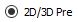
) Create a new problem either by selecting File
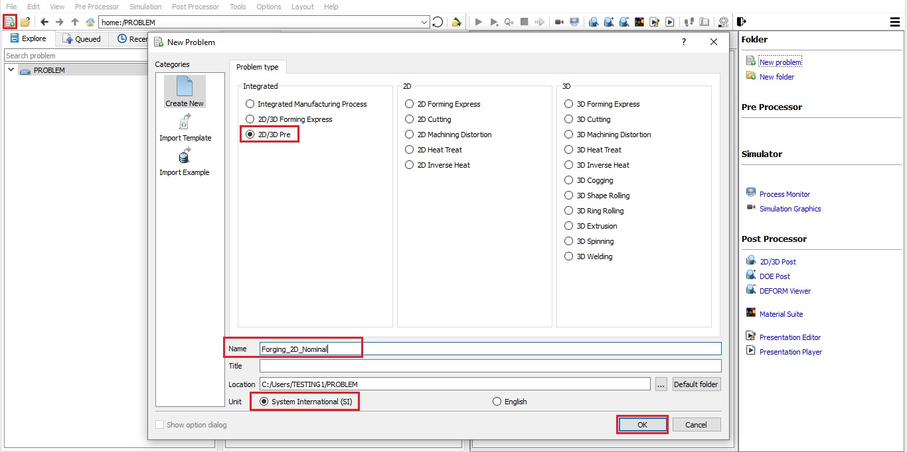
Creating New problem
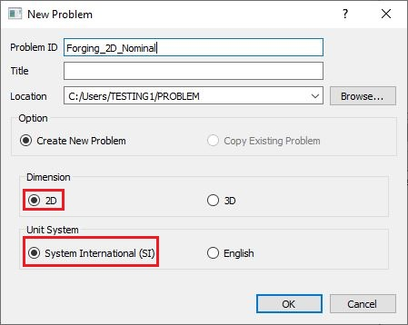
NG Pre New problem window
Keep Problem ID as "Forging_2D_Nominal", select "2D" Dimension radio button and keep "System International (SI)" unit System radio button in New Problem window as shown in Fig. RVEL1.2.
Import “Forging_2D_Nominal.key” from “\2D\LABS\RVE_LABS” folder using “Import Keyfile” from File menu in NG Pre as shown in Fig. RVEL1.3.
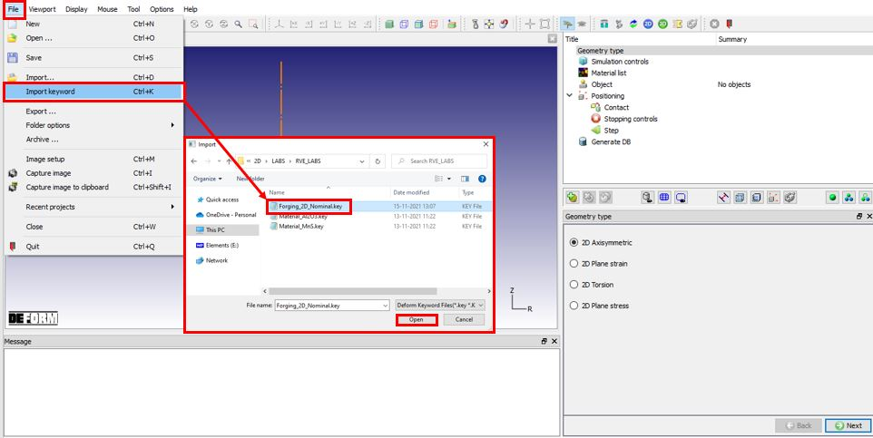
Importing Forging_2D_Nominal keyfile using Import Keyfile option
Go to Generate DB page and click on " Generate Database " to generate database and close the NG Pre. Run the simulation from GUI Main, make sure simulation stops normally without any issue. Now from GUI Main, click on Material Suite under “Post Processor” to open Material Suite module.
After the main window for material suite is opened, click "Open..." icon ( ) in the top tool bar to import the database
simulated above (Forging_2D_Nominal.DB). The default task item "DEFORM" is added to the task tree. Expand "Microstructure" item as shown in Fig. RVEL1.4. and click on "RVE Model" icon, the new task item "RVE model" is added to the task tree.
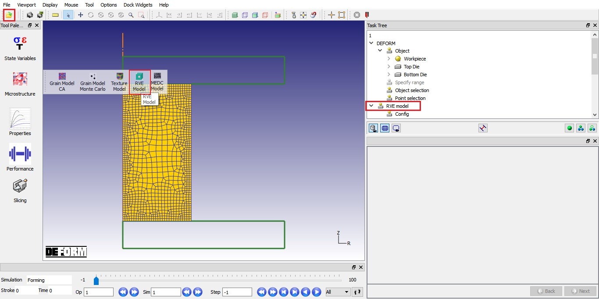
Launching RVE model in material suite
Go to last step and plot Effective strain state variable as shown in Fig. RVEL1.5.
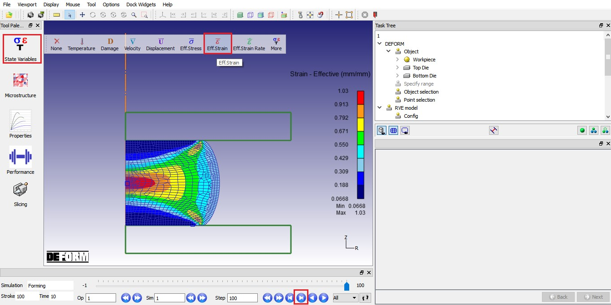
Effective strain plot at last saved step
In the "DEFORM" task tree, click on "Object selection" item and select "workpiece" (see Fig. RVEL1.6.). Click on "Point selection" item, since we already selected last step, the step number will be "100" in step number field (See Fig. RVEL1.7.). Define two points on workpiece as shown in Fig. RVEL1.7. The coordinate of point 1 (P1) is (20.5721, 75.4728, 0, 1) and the coordinate of Point 2 (P2) is (131.923, 142.717, 0, 1). Users can choose any step number convenient for them.
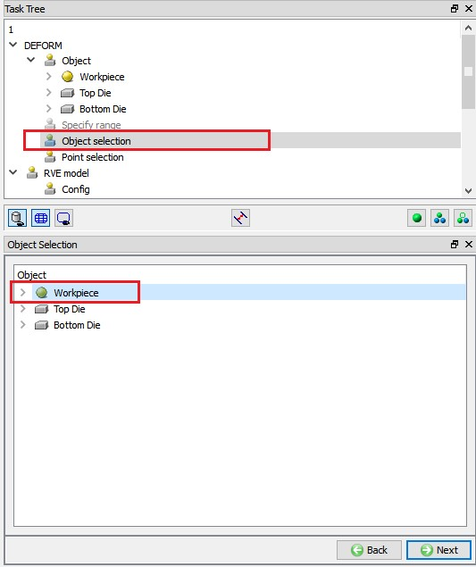
Object selection
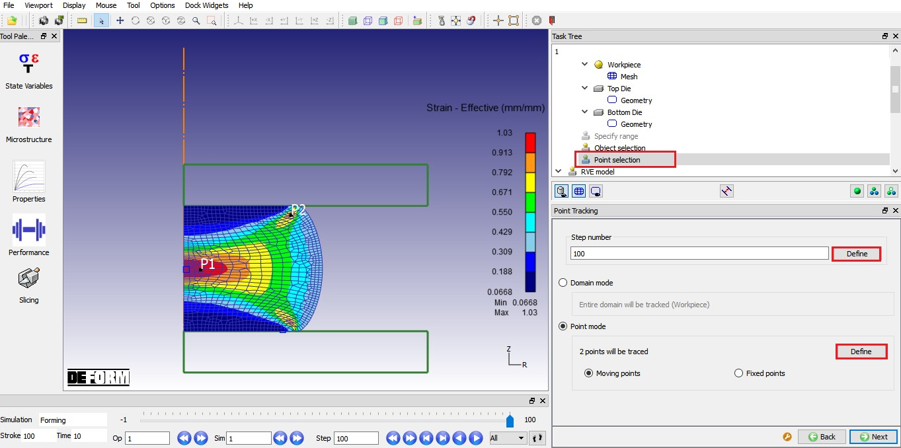
Point selection on Workpiece
Click on "Config" item, its data window appears. We need to specify the executable for FEM simulation and the working directory using the button adjacent to the field. The default executable for RVE model simulation is “DEF_SIMULATION.EXE", which is in installation directory of DEFORM software. The directory containing nominal database is set as Working directory as shown in Fig. RVEL1.8.
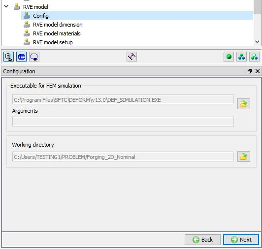
RVE Model Configuration settings
Click on “RVE model dimension” item under RVE model Task Tree, select RVE model dimension as “2D” as shown in Fig. RVEL1.9. Using “Import Project” option we can import previously saved RVE model project and using “Save Project” option we can save the RVE model project.
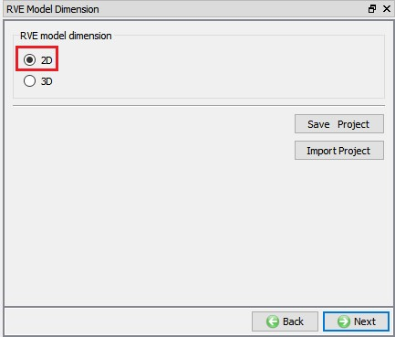
Selecting RVE model dimension
Click on "RVE model Materials" item under RVE model Task Tree, the first material listed in the list is the material of workpiece in the nominal database. In this lab, we are importing two inclusion materials, click on  (Add button) twice, two “New material” will be added to the list, select the first "New material" in list and import "Material_Al2O3.key" from "2D\LABS\RVE_LABS" folder using
(Add button) twice, two “New material” will be added to the list, select the first "New material" in list and import "Material_Al2O3.key" from "2D\LABS\RVE_LABS" folder using  option and select "Al2O3" material. Similarly, select another "New material" in list and import "Material_MnS.key" from "2D\LABS\RVE_LABS" folder and select "MnS" material. After
loading the materials, RVE Model Materials page looks like as shown in Fig.10. We can also import the material data from library using
option and select "Al2O3" material. Similarly, select another "New material" in list and import "Material_MnS.key" from "2D\LABS\RVE_LABS" folder and select "MnS" material. After
loading the materials, RVE Model Materials page looks like as shown in Fig.10. We can also import the material data from library using  button, save the material using
button, save the material using  button and we can also Edit the material using
button and we can also Edit the material using  button.
button.
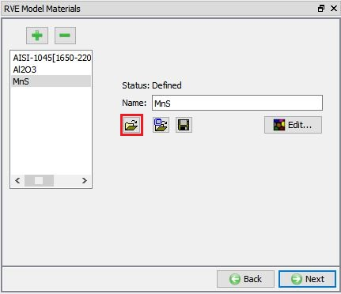
Loading materials required for RVE Model
Click on "RVE model setup" item under RVE model Task Tree, here we can create RVE model geometry using primitive option (2D circular inner void, 2D ellipse inner void and 2D semi-ellipse surface void) or using 2D user defined RVE model option.
Under 2D user defined RVE model option, we can import geometry for Matrix and for Substructure from geometry file or from keyfile using "Import user integrated RVE model from a file" button.
Under Substructure we have following options:
Import geometry file button - to import Substructure geometry from a file.
Translation - Translates the selected geometry to the translation coordinate value.
Rotation – Rotates the selected geometry based on defined rotation axis and Rotation angle (Degrees) data.
Scale - Scales the selected geometry based on scaling factor in X and Y direction.
Duplicate - We can duplicate the selected geometry and position the duplicated geometry based on the translation after duplication data.
Delete - Deletes the selected geometry in list.
Submodel - We can define the RVE fracture plane data for the selected geometry and generate tessellation inside the selected geometry. This option will not be active for voids.
In this lab, we are creating three substructures using circle of radius 0.01mm from imported geometry. In "RVE model setup" page, select “2D user defined RVE model”, specify RVE model size (L) as 0.2 and import “Rve_InclusionGeo_CR001.geo” file from 2D\LABS\RVE_LABS folder using Import option as shown in Fig. RVEL1.11., this will be geometry of the central substructure. Imported central substructure geometry with RVE model will look like as shown in Fig. RVEL1.11.
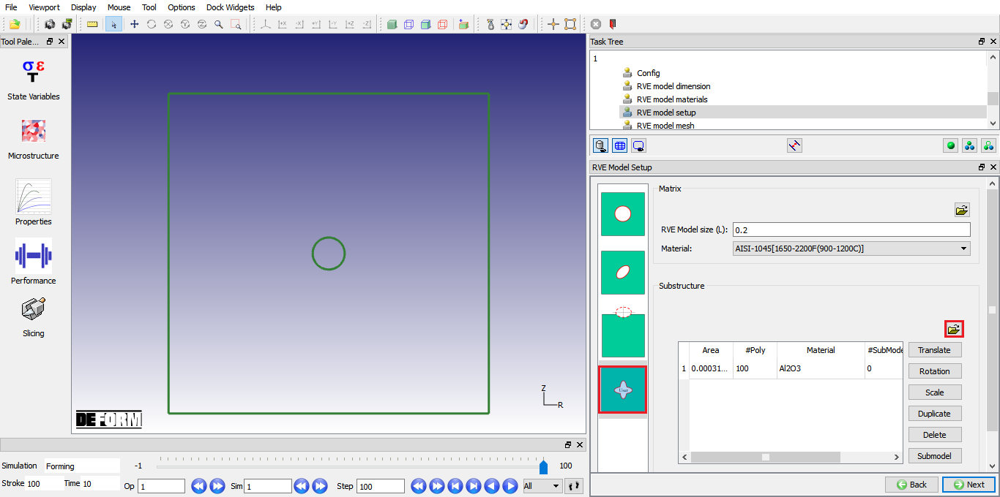
RVE model with central substructure
To create left substructure, using “Duplicate” option duplicate the central substructure geometry and position it at X=-0.05, Y=0 using “Translation” as shown in Fig. RVEL1.12. Scale the duplicated substructure using “Scale” option with FX=2 and FY=0.5 scaling factors as shown in Fig. RVEL1.12.
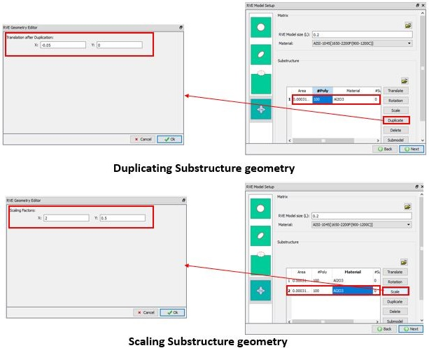
Creating Left Substructure geometry
Similarly, we will create right substructure. Using “Duplicate” option duplicate the central substructure geometry and position it at X=0.05, Y=0 using “Translation” as shown in Fig. RVEL1.13 Scale the duplicated substructure using “Scale” option with FX=0.5 and FY=2 factors as shown in Fig. RVEL1.13
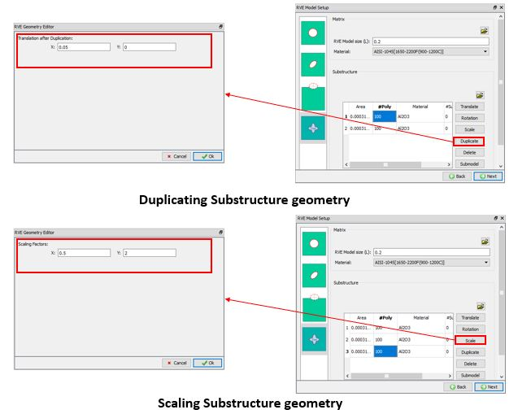
Creating Right Substructure geometry
Material for substructures can be defined by double clicking on the cell under Material column in the table as shown in Fig. RVEL1.14. We will not assign material to the central substructure, hence it will be considered as “None (void)”. For the left substructure, assign material “Al2O3”and for the right substructure, assign material “MnS”.
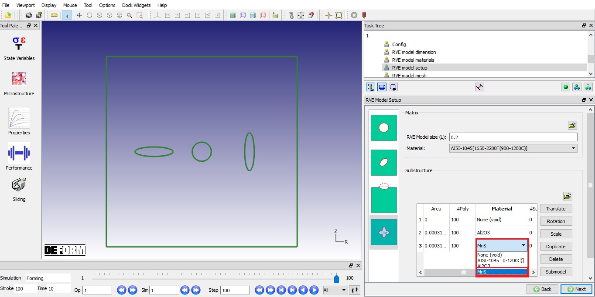
Assigning material for RVE model substructures
Click on "RVE model mesh" item under RVE model Task Tree, we will consider the substructures as separate objects hence, check "Make inclusions separate objects" check box. For Matrix, define No.
of elements as 2000 and size ratio as 2 and for smallest inclusion, define No. of elements as 45 and size ratio as 1. Click on  to
generate mesh, generated mesh for RVE model looks like as shown in Fig. RVEL1.15.
to
generate mesh, generated mesh for RVE model looks like as shown in Fig. RVEL1.15.
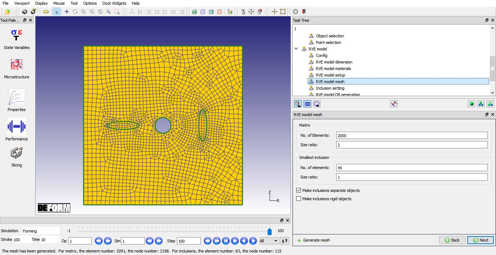
Mesh settings for RVE model inclusions
Click on "Inclusion settings" item under RVE model Task Tree. We will use default Matrix-inclusion contact relation data in this lab, contact type is "Non sticking" and friction type is "Shear" with friction coefficient of 0.25 as shown in Fig. RVEL1.16.
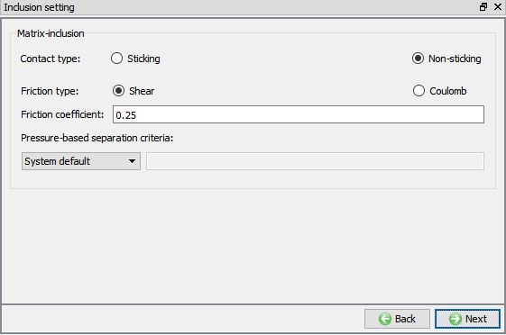
Defining Inclusion settings
Click on "RVE model DB generation" item under RVE model Task Tree, we can observe the RVE model setup information in RVE model DB generation page. Click on button to generate Database to simulate the RVE model. After generating Database successfully, we can observe "Database files are generated successfully for all tracked points!" message in Status bar (See Fig. RVEL1.17.).
After generating database, we can observe that RVE_MODEL folder is created under working directory. Inside RVE_MODEL directory, separate directories for each point will be created with “Point*” containing RVE model database along with .txt files of point tracking data for stress components, mean temperature and Velocity gradient state variables.
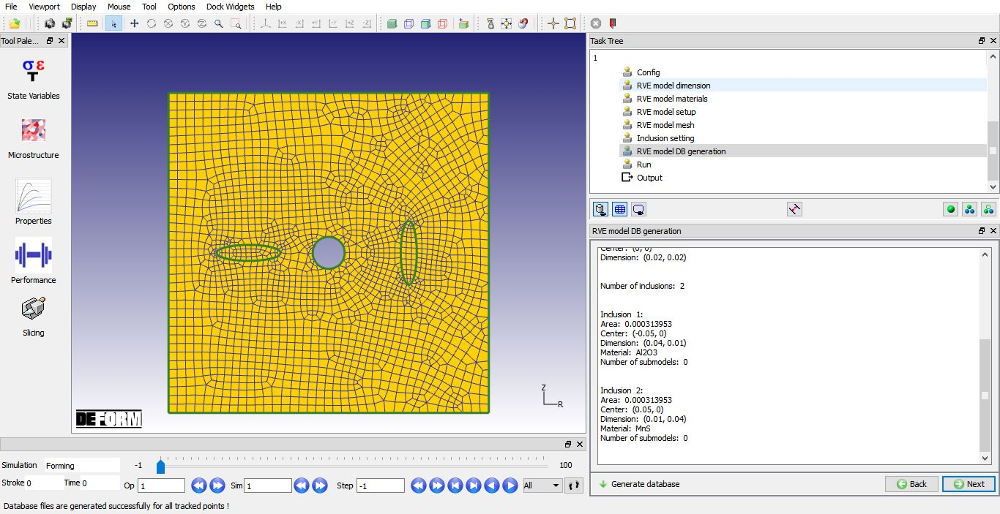
Database generation page for RVE model
Click on "Run" item in the task tree and click on "Compute" button in the data window to run the simulation (see Fig. RVEL1.18.).
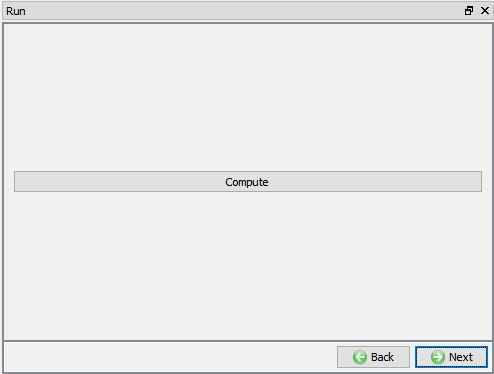
RVE model Run page
After completion of simulation, click on "Point1" item under “Output” in task tree, go to last step and plot Strain Effective state variable (see Fig. RVEL1.19). We can play the animation to observe the void closure and inclusion material behavior during forming operation. Fig. RVEL1.20. shows the central substructure void at first and last step of Point1.
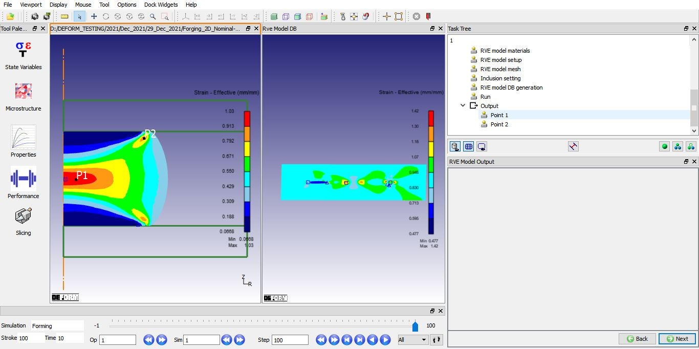
Point1 Output at last step with Effective Strain state variable
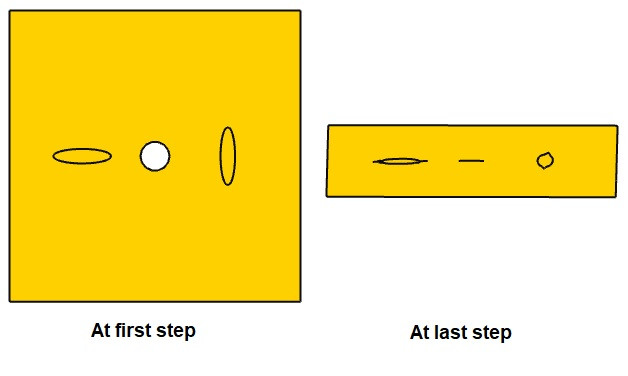
Point1 central substructure void at first and last step